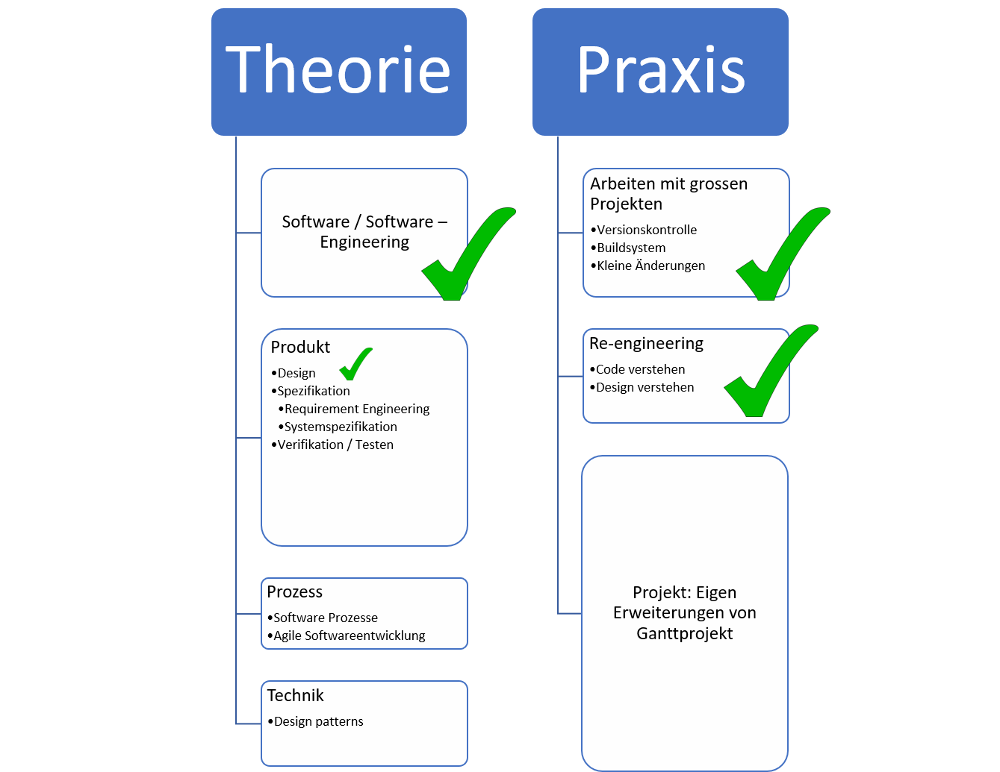

Software engineering
Requirements Engineering
Marcel Lüthi Departement Mathematik und Informatik
Administratives
- Detaillierte Informationen zum Projekt mit Deadline jetzt online.
- Erste Abgabe: Lastenheft
- Abgabe Entwurf bis: 7. November
- Besprechung mit Projektgruppen: 7. und 8. November
- Scan des Kapitels Requirement Engineering, von Helmut Balzert, liegt auf Adam workspace
- Grundlage dieser Vorlesung
Heutiges Programm
- Standortbestimmung
- Requirement Engineering - Übersicht
- Requirements
- Beispiele: Lastenheft / Pflichtenheft
Wo sind wir?
Software ist anders


- Software ist formbar
- Wird sich ändern
- Naturgesetzte helfen uns nicht die Funktion von Software zu erklären/ Schlüsse zu ziehen
Design Prinzipien
- Modularisieren
- Hilft uns Teile separat zu verstehen / zu entkoppeln
- Design vor Change
- Wahrscheinliche Änderungen sollen einfach gemacht werden
Modularität

Modular:
- Lose Kopplung
- Starke Bindung

Nicht-modular
- Starke Kopplung
- Lose Bindung
Information hiding

- Komponenten die sich ändern werden, werden hinter Interface vor Client versteckt werden.
- Wissen von Client über Modul wird auf Interface beschränkt
Beispielmodul: Abstrakter Datentyp
module STACK_ADT
exports
type STACK = ? // typ implementation ist abstrakt
procedure push(S : in out STACK ; VAL: in INTEGER);
procedure pop(S : in out STACK; VAL: out INTEGER);
function empty (S: in STACK) : BOOLEAN;
...
implementation
end STACK_ADT
- Kapselt Datenrepräsentation via Operationen
- Grundlage objektorientierter Programmierung
Wichtige OO Prinzipien
- Single Responsibility Prinzip
- Open closed Prinzip
- Liskovsches Substitutionsprinzip
- Interface Segregation
- Dependency Inversion
- Gesetz von Demeter (nicht teil von SOLID)
Prinzipien zielen auf einfache Änderbarkeit durch Entkopplung und Modularisierung ab.
Liskovsches Substitutionsprinzip
Sei $\phi(x)$ eine beweisbare Eigenschaft von Objekt $x$ von Typ $T$. Dann soll $\phi(y)$ für Objekte $y$ des Typs $S$ wahr sein, wobei $S$ ein Untertyp von $T$ ist.
B. H. Liskov, J. M. Wing: Behavioral Subtyping Using Invariants and Constraints (1999)
- Wir verlangen Eigenschaften um System zu verstehen.
- Unsere eigene Form der "Gesetze".
Abstraktion
- Beschreibung auf verschiedenen Abstraktionsleveln
- Fokus auf Wichtigem, weglassen von Details
Heutiges Thema
- Hoher Abstraktionslevel
- Ausserhalb der Komfortzone vieler Informatiker